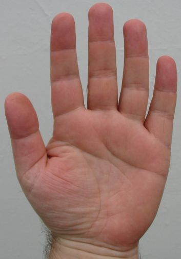

Lé pônchet et les quat' dés
|
lé preunmié dé |
lé maître dé |
Jean des sceas |
||
|
lé pônchet |
 |
lé p'tit dé |
||
|
aridé |
maître dé |
Jean des sceas |
||
|
gros dé |
p'tit cout'las |
|||
|
liquepot |
longis |
malachis |
||
|
pônchot |
Pièrre des p'tits |
|||
|
l'aridé |
mèrgotton |
Jean des sceas |
||
|
lé gros dé |
lé p'tit Lucas |
|||
|
Jacques des sceaux |
Grand dé |
Jean ri dé |
||
|
Gros grînmaud |
P'tit dé |
|||
|
Jean des sceaux |
Jean des poux |
ri dé |
||
|
gros ronneau |
p'tit dé |
|||
|
Jèrriais |
Angliais |
|
la main |
hand |
|
un dé |
finger |
|
un dinnot |
finger (child's word) |
|
lé paûmé |
palm |
|
lé pouongnet |
wrist |
|
lé pouaing |
fist |
|
la jouainte |
knuckle |
|
l's ongl'yes |
nails |
|
lé but des dés |
fingertips |
|
la main drouaite |
right hand |
|
la main gauche |
left hand |
|
dêtri |
righthanded |
|
gaûchet |
lefthanded |
|
eune empouongne |
a hand-full |
|
eune galenie |
a two-hands-full |
|
eune pînchie |
a pinch |
|
un mouoché à chîn carres |
a bunch of fives |
Viyiz étout: